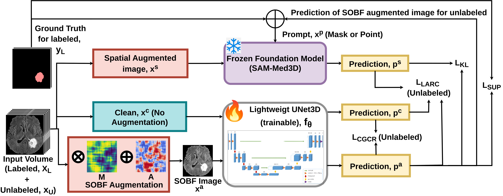
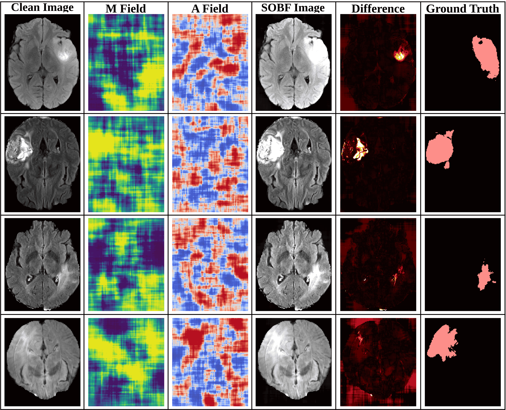
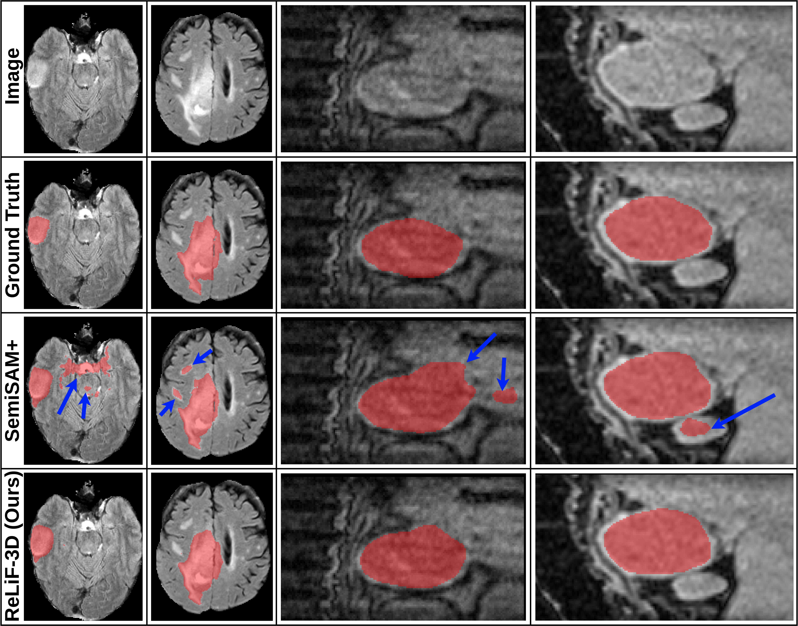
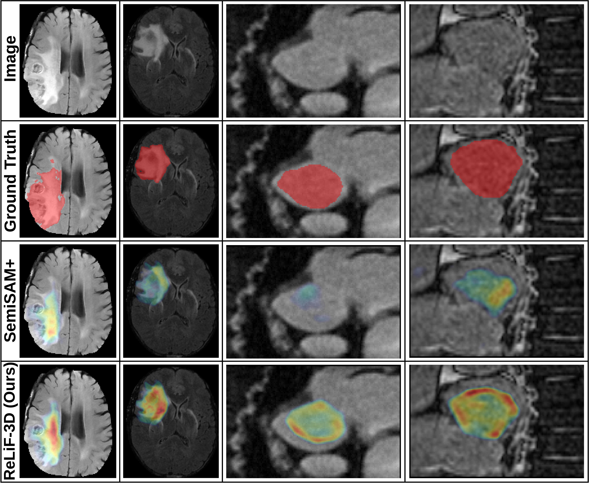

Manual voxel-level MRI annotation is expensive and hard to scale.
MICCAI 2026
Early Accept
Top 9% of Submissions
ReLiF-3D: Prior-Guided Semi-Supervised 3D MRI Segmentation via Robust Bias-Consistent Paired Views
AI Research · VisDom Lab · IISER Bhopal
Overview
Foundation-guided learning for low-label 3D MRI segmentation.

Abstract
Stable prior supervision without a drifting teacher.
ReLiF-3D is a foundation-guided semi-supervised framework for 3D MRI segmentation under limited annotation. The method trains a lightweight 3D U-Net using supervision from a frozen volumetric foundation model prior, avoiding unstable EMA teacher drift while retaining a stable spatial guide. Its Smooth Orthogonal Bias Field (SOBF) generator produces anatomically consistent scanner-shifted paired views, and confidence-gated co-regularization enforces consistency only on reliable agreements. Lesion-aware representation alignment further improves robustness in low-label settings.
Method
Four components form the ReLiF-3D training recipe.
Frozen SAM-Med3D Prior
Provides stable anatomical guidance without EMA teacher updates.
SOBF Paired Views
Simulates realistic scanner-dependent MRI bias through smooth multiplicative and additive fields.
Confidence-Gated Co-Regularization
Applies consistency constraints only where paired predictions agree reliably.
Lesion-Aware Alignment
Aligns lesion-relevant features with the foundation prior while reducing noisy background gradients.
SOBF Visual
Smooth orthogonal fields simulate scanner-dependent MRI bias.
SOBF constructs paired MRI views using smooth orthogonal multiplicative and additive fields. The visualization below shows clean images, generated bias fields, SOBF images, difference maps, and ground-truth masks.

Quantitative
Quantitative performance under limited labels.
1 labeled volume
BraTS76.41 Dice
LA76.84 Dice
ReLiF-3D remains stable in the hardest low-label setting on BraTS and LA.
2 labeled volumes
BraTS78.26 Dice
LA79.14 Dice
Adding one more labeled scan gives consistent overlap gains while preserving boundary quality.
3 labeled volumes
BraTS76.33 Dice
LA79.50 Dice
ReLiF-3D maintains strong LA performance while keeping BraTS overlap competitive.
5 labeled volumes
BraTS77.69 Dice
LA80.22 Dice
The method continues improving as labels increase, without losing robustness to scanner shifts.
Key insight
Across extreme low-label regimes, ReLiF-3D improves overlap while reducing boundary errors. The strongest gains appear in the 1-label setting, where stable foundation guidance and SOBF paired views reduce the failure modes common in teacher-student SSL.
Qualitative
Qualitative comparisons and attention maps.


Citation
Cite ReLiF-3D.
@inproceedings{jangid2026relif3d,
title = {ReLiF-3D: Prior-Guided Semi-Supervised 3D MRI Segmentation
via Robust Bias-Consistent Paired Views},
author = {Jangid, Kunal and Basu, Tanmay and Kurmi, Vinod},
booktitle = {Proceedings of MICCAI},
year = {2026}
}Contact
For queries and collaborations, contact kunal24@iiserb.ac.in. or jangidkunal1999@gmail.com